Sparkee logo na tmavé pozadí D1 · čistý výřez (cut clean)
písmena mist #F5F4FB
obrys maskota ink #2C303C (beze změny)
výřez = rovnoměrná mezera 2,32 j. (0,8 × obrys 2,9)
zaoblení konců písmen r = 2,9 j. (= šířka obrysu)
bez lemu, bez záře
✦ pastelová holo
900 px hero, závěrečná karta videa
ink #2C303C

near-black #1E2029
tmavá holo záře (pozadí)
jak výřez funguje
Písmena jsou vyříznutá kolem maskota, žádný štítek.
Hrana výřezu je přesný offset siluety maskota (včetně jeho obrysu) o 2,32 j., takže mezera je všude stejná.
Kde se písmeno přeruší, konec je zaoblený poloměrem 2,9 j. jako vlastní zakončení písmen. Úzký krček mezi nožkou a obloukem „r“ je čistě odříznutý, nezůstal žádný vlas ani ostrůvek.
Maskot, plamínek a ✦ jsou vektorově beze změny, na stejném místě a ve stejném měřítku i náklonu.
Obrys maskota zůstává ink #2C303C: na #2C303C splyne s mezerou v jeden klidný pás, na #1E2029 je vidět jako jemný lem.
Malé velikosti 300 px · 120 px (header) · 40 px (avatar)
ink #2C303C
300 px
120 px
40 px
header
near-black #1E2029
300 px
120 px
40 px
header
tmavá holo záře
300 px
120 px
40 px
header
Detail výřezů 4× (4× oproti logu 900 px) · nahoře #1E2029, dole #2C303C
Srovnání s oficiálním logem 124:3 900 px · stejná poloha, měřítko i náklon maskota
oficiální logo (assets/img/logo.svg) na paper #F6F4EF
D1 na ink #2C303C
rozdíl (difference) oficiální × D1: černá = pixelově shodné
kontroly
Maskot 1:1Plocha maskota, plamínku a ✦ při 900 px: 37 173 z 37 173 pixelů shodných s oficiálním logem (max. rozdíl 0/255). V rozdílovém snímku je maskot celý černý, svítí jen písmena (jiná barva a výřez).
Rovnoměrná mezeraNejmenší vzdálenost písmen od siluety maskota: a 2,315 j., r 2,315 j. (cíl 2,32). Všechna napojení nových křivek na původní obrysy jsou hladká (G1, 0,000°).
Na co dát pozorOblouk „r“ z velké části zakrývá nožka, takže při 300 px a menších se „r“ čte hlavně díky zákrytu (dřík + malý konec oblouku za nohou). Na #1E2029 je obrys maskota vidět jako jemný lem vedle mezery, pás tam není jednolitý.
Písmenas, p, k, e, e beze změny. U a, r jsou všechny neproříznuté úseky původní Bézierovy segmenty; nové jsou jen hrana výřezu a zaoblení. Žádné ostrůvky ani vlasy (min. tloušťka u výřezu 5,8 j.). k je 10,8 j. od ruky, ✦ je 19,2 j. od e, obojí bez výřezu.